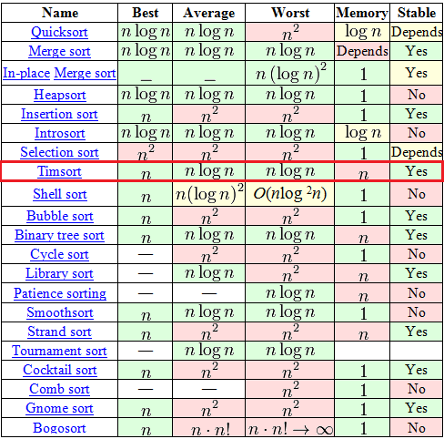
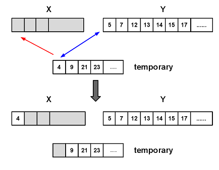

Timsort, в отличии от всяких там «пузырьков» и «вставок», штука относительно новая — изобретен был в 2002 году Тимом Петерсом (в честь него и назван). С тех пор он уже стал стандартным алгоритмом сортировки в Python, OpenJDK 7 и Android JDK 1.5. А чтобы понять почему — достаточно взглянуть на вот эту табличку из Википедии.

Среди, на первый взгляд, огромного выбора в таблице есть всего 7 адекватных алгоритмов (со сложностью
O(n logn) в среднем и худшем случае), среди которых только 2 могут похвастаться стабильностью и сложностью
O(n) в лучшем случае. Один из этих двух — это давно и хорошо всем известная «Сортировка с помощью двоичного дерева». А вот второй как-раз таки Timsort.
Алгоритм построен на той идее, что в реальном мире сортируемый массив данных часто содержат в себе упорядоченные (не важно, по возрастанию или по убыванию) подмассивы. Это и вправду часто так. На таких данных Timsort рвёт в клочья все остальные алгоритмы.
Сразу к сути
Не ждите тут каких-то сложных математических открытий. Дело в том, что на самом деле Timsort — это не полностью самостоятельный алгоритм, а гибрид, эффективная комбинация нескольких других алгоритмов, приправленная собственными идеями. Очень коротко суть алгоритма можно объяснить так:
- По специальному алгоритму разделяем входной массив на подмассивы.
- Сортируем каждый подмассив обычной сортировкой вставками.
- Собираем отсортированные подмассивы в единый массив с помощью модифицированной сортировки слиянием.
Дьявол, как всегда, скрывается в деталях, а именно в алгоритме из пункта 1 и модификации сортировки слиянием из пункта 3.
Алгоритм
Используемые понятия
- N — размер входного массива
- run — упорядоченный подмассив во входном массиве. Причём упорядоченный либо нестрого по возрастанию, либо строго по убыванию. Т.е или «a0 <= a1 <= a2 <= ...», либо «a0 > a1 > a2 > ...»
- minrun — как было сказано выше, на первом шаге алгоритма входной массив будет поделен на подмассивы. minrun — это минимальный размер такого подмассива. Это число рассчитывается по определённой логике из числа N.
Шаг 0. Вычисление minrun.
Число
minrun определяется на основе
N исходя из следующих принципов:
- Оно не должно быть слишком большим, поскольку к подмассиву размера minrun будет в дальнейшем применена сортировка вставками, а она эффективна только на небольших массивах
- Оно не должно быть слишком маленьким, поскольку чем меньше подмассив — тем больше итераций слияния подмассивов придётся выполнить на последнем шаге алгоритма.
- Хорошо бы, чтобы N \ minrun было степенью числа 2 (или близким к нему). Это требование обусловлено тем, что алгоритм слияния подмассивов наиболее эффективно работает на подмассивах примерно равного размера.
В этом месте автор алгоритма ссылается на собственные эксперименты, показавшие, что при
minrun> 256 нарушается пункт 1, при
minrun < 8 — пункт 2 и наиболее эффективно использовать значения из диапазона (32;65). Исключение — если
N < 64, тогда
minrun =
N и timsort превращается в простую сортировку вставкой. В данный момент алгоритм расчёта
minrun просто до безобразия: берём старшие 6 бит из
N и добавляем единицу, если в оставшихся младших битах есть хотя бы один ненулевой. Примерный код выглядит так:
int GetMinrun(int n)
{
int r = 0; /* станет 1 если среди сдвинутых битов будет хотя бы 1 ненулевой */
while (n >= 64) {
r |= n & 1;
n >>= 1;
}
return n + r;
}
Шаг 1. Разбиение на подмассивы и их сортировка.
Итак, на данном этапе у нас есть входной массив, его размер
N и вычисленное число
minrun. Алгоритм работы этого шага:
- Ставим указатель текущего элемента в начало входного массива.
- Начиная с текущего элемента, ищем во входном массиве run (упорядоченный подмассив). По определению, в этот run однозначно войдет текущий элемент и следующий за ним, а вот дальше — уже как повезет. Если получившийся подмассив упорядочен по убыванию — переставляем элементы так, чтобы они шли по возрастанию (это простой линейный алгоритм, просто идём с обоих концов к середине, меняя элементы местами).
- Если размер текущего run'а меньше чем minrun — берём следующие за найденным run-ом элементы в количестве minrun — size(run). Таким образом, на выходе у нас получается подмассив размером minrun или больше, часть которого (а в идеале — он весь) упорядочена.
- Применяем к данному подмассиву сортировку вставками. Так как размер подмассива невелик и часть его уже упорядочена — сортировка работает быстро и эффективно.
- Ставим указатель текущего элемента на следующий за подмассивом элемент.
- Если конец входного массива не достигнут — переход к пункту 2, иначе — конец данного шага.
Шаг 2. Слияние.
На данном этапе у нас имеется входной массив, разбитый на подмассивы, каждый из которых упорядочен. Если данные входного массива были близки к случайным — размер упорядоченных подмассивов близок к
minrun, если в данных были упорядоченные диапазоны (а исходя из рекомендаций по применению алгоритма, у нас есть основания на это надеяться) — упорядоченные подмассивы имеют размер, превышающий
minrun.
Теперь нам нужно объединить эти подмассивы для получения результирующего, полностью упорядоченного массива. Причём по ходу этого объединения нужно выполнить 2 требования:
- Объединять подмассивы примерно равного размера (так получается эффективнее).
- Сохранить стабильность алгоритма — т.е. не делать бессмысленных перестановок (например, не менять два последовательно стоящих одинаковых числа местами).
Достигается это таким образом.
- Создаем пустой стек пар <индекс начала подмассива>-<размер подмассива>. Берём первый упорядоченный подмассив.
- Добавляем в стек пару данных <индекс начала>-<размер> для текущего подмассива.
- Определяем, нужно ли выполнять процедуру слияния текущего подмассива с предыдущими. Для этого проверяется выполнение 2 правил (пусть X, Y и Z — размеры трёх верхних в стеке подмассивов):
X > Y + Z
Y > Z
- Если одно из правил нарушается — массив Y сливается с меньшим из массивов X и Z. Повторяется до выполнения обоих правил или полного упорядочивания данных.
- Если еще остались не рассмотренные подмассивы — берём следующий и переходим к пункту 2. Иначе — конец.
Цель этой хитрой процедуры — сохранение баланса. Т.е. изменения будут выглядеть вот так:
а значит, размеры подмассивов в стеке эффективны для дальнейшей сортировки слиянием. Представьте себе идеальный случай: у нас есть подмассивы размера 128, 64, 32, 16, 8, 4, 2, 2 (забудем на секунду о наличии требования «размер подмассива >=
minrun»). В этом случае никаких слияний не будет выполнятся пока не встретятся 2 последних подмассива, а вот после этого будут выполнены 7 идеально сбалансированных слияний.
Процедура слияния подмассивов
Как Вы помните, на втором шаге алгоритма мы занимаемся слиянием двух подмассивов в один упорядоченный. Мы всегда соединяем 2 последовательных подмассива. Для их слияния используется дополнительная память.
- Создаём временный массив в размере меньшего из соединяемых подмассивов.
- Копируем меньший из подмассивов во временный массив
- Ставим указатели текущей позиции на первые элементы большего и временного массива.
- На каждом следующем шаге рассматриваем значение текущих элементов в большем и временном массивах, берём меньший из них и копируем его в новый отсортированный массив. Перемещаем указатель текущего элемента в массиве, из которого был взят элемент.
- Повторяем 4, пока один из массивов не закончится.
- Добавляем все элементы оставшегося массива в конец нового массива.

Модификация процедуры слияния подмассивов
Всё, вроде бы, хорошо в показанном выше алгоритме слияния. Кроме одного. Представьте себе процедуру слияния двух вот таких массивов:
A = {1, 2, 3,..., 9999, 10000}
B = { 20000, 20001, ...., 29999, 30000}
Вышеуказанная процедура для них, конечно, сработает, но каждый раз на её четвёртом пункте нужно будет выполнить одно сравнение и одно копирование. И того 10000 сравнений и 10000 копирований. Алгоритм Timsort предлагает в этом месте модификацию, которую он называет «галоп». Суть в следующем:
- Начинаем процедуру слияния, как было показано выше.
- На каждой операции копирования элемента из временного или большего подмассива в результирующий запоминаем, из какого именно подмассива был элемент.
- Если уже некоторое количество элементов (в данной реализации алгоритма это число жестко равно 7) было взято из одного и того же массива — предполагаем, что и дальше нам придётся брать данные из него. Чтобы подтвердить эту идею, мы переходим в режим «галопа», т.е. бежим по массиву-претенденту на поставку следующей большой порции данных бинарным поиском (мы помним, что массив упорядочен и мы имеем полное право на бинарный поиск) текущего элемента из второго соединяемого массива. Бинарный поиск эффективнее линейного, а потому операций поиска будет намного меньше.
- Найдя, наконец, момент, когда данные из текущего массива-поставщика нам больше не подходят (или дойдя до конца массива), мы можем, наконец, скопировать их все разом (что может быть эффективнее копирования одиночных элементов).
Возможно, объяснение слегка туманно, попробуем на примере.
A = {1, 2, 3,..., 9999, 10000}
B = { 20000, 20001, ...., 29999, 30000}
- Первые 7 итераций мы сравниваем числа 1, 2, 3, 4, 5, 6 и 7 из массива A с числом 20000 и, убедившись, что 20000 больше — копируем элементы массива A в результирующий.
- Начиная со следующей итерации переходим в режим «галопа»: сравниваем с числом 20000 последовательно элементы 8, 10, 14, 22, 38, n+2^i, ..., 10000 массива A. Как видно, таких сравнение будет намного меньше 10000.
- Мы дошли до конца массива A и знаем, что он весь меньше B (мы могли также остановиться где-то посередине). Копируем нужные данные из массива A в результирующий, идём дальше.
Вот и весь алгоритм.